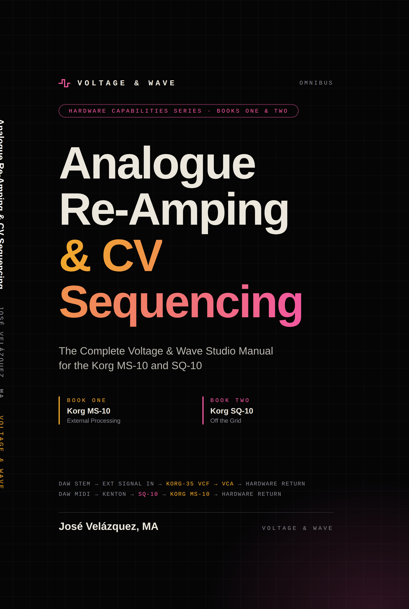

Bring true 1978 analogue warmth, grit, and unquantised sequencing to your sterile digital tracks. No plugins. No presets. Just pure voltage.
THE COMPLETE VOLTAGE & WAVE STUDIO MANUAL FOR THE KORG MS-10 AND SQ-10
Two instruments, one working method. Combines Book One and Book Two into a complete studio manual of sixteen repeatable procedures. Each is built to be used at the desk, mid-session, and comes with a patch configuration, a listening check and a QR code to hear the result. No plugins. No presets. Just pure voltage.
I N S I D E

UNQUANTISED STEP-SEQUENCING & MIDI-TO-CV TRANSLATION
The Korg SQ-10 makes no sound. At every step it sends three control voltages, and what a synthesiser does with them is up to you. Set pitch by ear and it lands between the notes a MIDI grid allows. Patch a channel into the clock and the beat pushes and pulls. Drive the filter step by step, or run a DAW stem through the MS-10 while the sequencer moves it. This is the working engineer’s manual for all of it: twelve repeatable procedures, each laid out as an open spread, with the patch on the left, the listening check on the right and a QR code to hear it.
I N S I D E